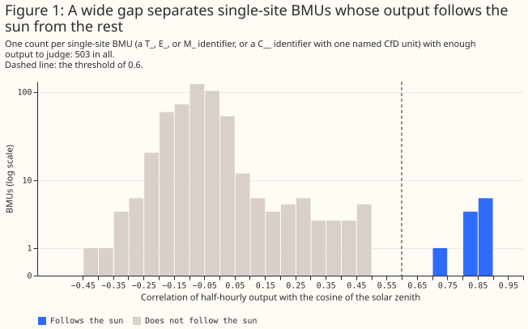
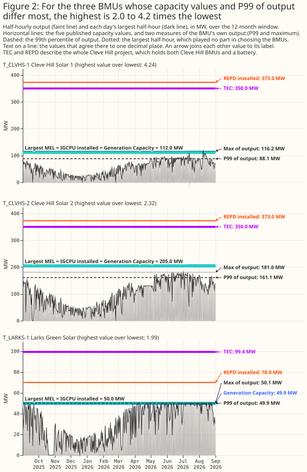
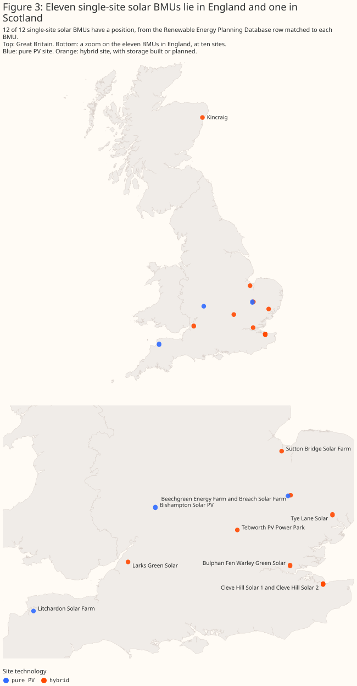
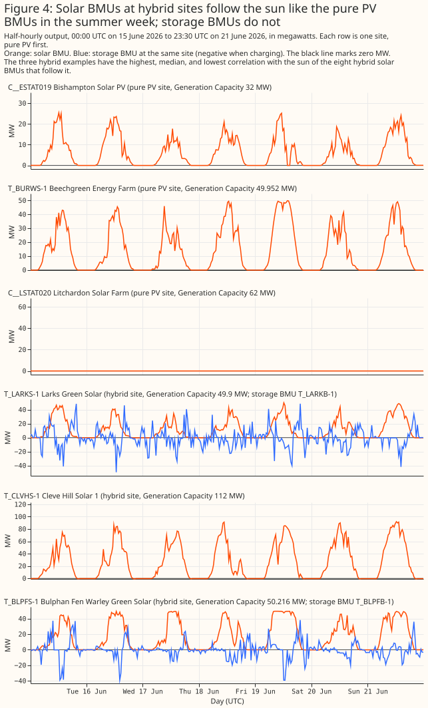
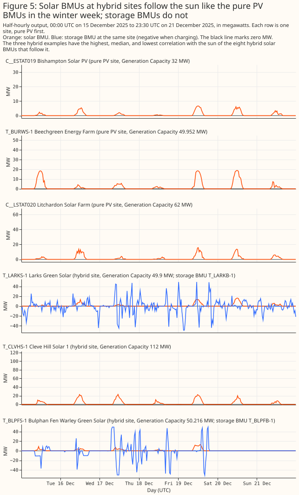

At least 12 Balancing Mechanism Units at 11 solar sites in Great Britain, and 8 of those sites have storage built or planned
This study counts the solar Balancing Mechanism Units (BMUs) in Great Britain, and compares the capacity that each published source gives them. A BMU is a unit of generation or demand that a company (its lead party) registers with Elexon. Elexon settles the Balancing Mechanism: Elexon calculates the metered volumes that the National Energy System Operator (NESO) pays for when NESO uses the Balancing Mechanism to balance supply and demand. Elexon's BMU register does not say which BMUs are solar, because none of its 3,115 rows has a fuel type of solar. The study therefore downloads 12 months of Elexon's settled half-hourly output (report B1610) for each of 1,705 BMUs, and asks whether each BMU's output follows the sun. The census is the list of BMUs whose output follows the sun, plus the BMUs that Elexon's Installed Generation Capacity per Unit report (IGCPU) types as Solar. It holds 38 BMUs: 12 single-site BMUs, which Elexon's naming convention or the Low Carbon Contracts Company's contract data ties to one generating site, and 26 aggregate BMUs, which can pool many sites. Eleven of the 12 single-site BMUs follow the sun, and the twelfth is typed Solar in IGCPU but has no output yet. The 12 BMUs sit at 11 sites. Eight of those sites are hybrid, meaning that the site also holds a battery (storage), built or planned, and the other three are pure photovoltaic (PV), with no storage found.
Five published sources each give a capacity for a BMU, and each source measures a different quantity. The study adds a sixth value, the P99 of the BMU's output, which is the level the BMU's half-hourly output exceeds in 1% of half-hours. The sources are the BMU register's Generation Capacity, IGCPU, the Maximum Export Limit (MEL) that a lead party submits, the Transmission Entry Capacity (TEC) register, and the Renewable Energy Planning Database (REPD). Introduction says what each capacity value measures. Across the census, the largest of one BMU's six values is up to 4.2 times its smallest. The factor of 4.2 is at Cleve Hill Solar 1, one of two BMUs at the Cleve Hill site, because TEC and REPD give one value for a whole project. The REPD value for Cleve Hill, 373.0 MW, exceeds even the two Cleve Hill BMUs' Generation Capacity added together, 317.0 MW, probably because REPD gives the solar array's direct-current (DC) rating. Cleve Hill Solar 2 has the next-largest factor, 2.3, for the same reason as Cleve Hill Solar 1, and Larks Green Solar follows at 2.0, because its TEC value covers the solar BMU and the site's battery.
- To list solar BMUs, read each BMU's output and not the register, and treat the 12 single-site BMUs as a floor. Add the 26 aggregate BMUs only where an application can accept BMUs that pool several sites (Aggregate BMUs and Discussion).
- To state the capacity of one solar BMU, use its Generation Capacity, and keep the five published capacities and the P99 apart (Capacity).
- To compare a solar BMU's output with a solar forecast, use the solar BMU without its site's storage BMU, and drop 26 and 29 January 2026 at Tebworth PV Power Park, 13 July 2026 at Cleve Hill, and the days of almost no output or capped output at Litchardon Solar Farm (24 to 25 February, 8 to 16 April, 16 May to 28 July, and 28 to 31 August 2026, and the capped days from 1 March to 15 May), when the solar BMU's meter carried flows that were not solar or its output was held down (Discussion).
Key findings
- A wide gap in correlation of output with the sun's height, from 0.49 to 0.71, separates the 11 single-site BMUs that follow the sun from the other single-site BMUs with output, so the census does not depend on where the threshold sits in that gap. The lower edge of the gap, 0.71, is Litchardon Solar Farm, whose outage lowers its correlation (The census).
- The 12 single-site solar BMUs have 776.9 MW of Generation Capacity in all: 144.0 MW at the 3 BMUs at pure PV sites and 633.0 MW at the 9 BMUs at hybrid sites. The parts do not add exactly to the total because each is rounded to one decimal place on its own (Capacity).
- One BMU's five published capacity values and the P99 of its output can differ by a factor of 4.2, at Cleve Hill Solar 1, where the TEC and REPD values describe the whole two-BMU site (Capacity).
- Eleven of the 12 single-site solar BMUs lie south of 53°N in England, and the twelfth lies in Scotland (Where the BMUs are).
- By the BMU register, 2 of the 12 single-site BMUs are in a licence area of National Grid Electricity Distribution (NGED), and both are embedded in a distribution network: Bishampton Solar PV (West Midlands) and Litchardon Solar Farm (South West England). The register gives a grid supply point (GSP) group to a third embedded BMU, Kincraig in North Scotland, and to none of the nine transmission-connected BMUs. By the coordinates of their REPD rows, 4 of the 12 lie inside NGED's licence areas: the two embedded BMUs, Larks Green, and probably Sutton Bridge. Larks Green and Sutton Bridge connect to the transmission network and not to NGED's (Distribution network operator areas).
- At the four sites with a storage BMU, the solar BMU and the storage BMU look like two separate meters, with the exception of Tebworth on two days in January 2026: a solar BMU follows the sun like a pure PV BMU, and a storage BMU charges at midday and discharges in the early evening (What a solar BMU looks like).
- All 12 built PV projects in the TEC register map to a BMU, and 7 of the 12 map to a BMU in the census, so the census missed no separately registered solar BMU at a built project that the study's by-hand matching of TEC projects to BMUs could find (Recall).
- No public source that the study found gives the technology mix of any of the 26 aggregate BMUs, so the solar part of an aggregate BMU can only be inferred from the BMU's output (Aggregate BMUs).
- The solar part of the 26 aggregate BMUs is between 0 and a rough ceiling of 1,802.8 MW, and fitted solar-output curves put it between 782.1 MW and 971.3 MW, with 782.1 MW from the cosine of the solar zenith angle as the shape and 971.3 MW from the mean irradiance of 18 grid points of the Copernicus Atmosphere Monitoring Service (CAMS). On the 11 single-site BMUs, all solar-only, the largest error against Generation Capacity is 33% for the cosine and 28% for the CAMS mean, both at Litchardon Solar Farm, and 27% and 16% without it. Validation cannot choose between the two shapes (Capacity).
- Of the 26 aggregate BMUs, five belonging to one supplier hold 90% of the Generation Capacity, and each of the five has output below zero in 77% to 95% of its half-hours (The aggregate BMUs in the census).
Introduction
Several datasets publish a capacity for a BMU, and each capacity value measures a different quantity. The study reads seven public sources. The table says who publishes each source, what it lists, and which capacity value the study takes from it.
| Source | Published by | What it lists | Capacity value the study takes |
|---|---|---|---|
| BMU register | Elexon | Every registered BMU, with its identifier, name, lead party, and fuel type | Generation Capacity, which the lead party declares |
| B1610 | Elexon | Each BMU's settled output (the metered volume that Elexon calculates) in each half-hour | None. The study uses the output itself |
| IGCPU (report B1420) | Elexon, for NESO | Installed capacity of each generating unit, with a resource type such as "Solar" | Installed capacity, as NESO lists it |
| MELS (Elexon's dataset of Maximum Export Limits) | Elexon | The Maximum Export Limit (MEL), the highest export level that each lead party submits for each BMU, which is a submitted level and not a capacity | The largest MEL in the 30 days before the run |
| TEC register | NESO | Each project's export capacity agreed at the grid connection, with one row for each stage of the project (for example under construction, or connected), and its plant types | Connected capacity if built, agreed capacity if not |
| REPD | Department for Energy Security and Net Zero | Each renewable project planned or built, with its technology, status, and grid position | Installed capacity of each project row; co-located storage has its own row, and a solar row's value may be a DC panel rating |
| Contract for Difference (CfD) data | Low Carbon Contracts Company | The BMU that carries each CfD unit, and each CfD unit's name, technology, connection type, and maximum contract capacity | None. The study uses the data to decide whether a C__ BMU is one named site |
Choosing among the capacity values needs a list of the solar BMUs first, and a single lookup cannot give that list.
Why a single lookup is not enough
A single lookup of the BMU register looks like enough, and it fails in four ways. The lookup would filter the BMU register for solar BMUs and add up their capacity. Each of the four problems below breaks that plan, and together they are why the study reads several registers and then the output itself.
No register says which BMUs are solar. The BMU register has a fuel-type field, but no row holds
a solar value: of the 3,115 rows, 2,525 have no fuel type, 103 say OTHER, and the rest name wind,
gas, hydro, nuclear, and similar fuels. IGCPU gives a resource type, but types only 9 BMUs as Solar
and 79 as "Generation", which names no technology. Two of those 9 BMUs have no output in the window,
so the typed list is also not a list of BMUs that generate.
A name search misses BMUs, and most aggregate BMUs have no name to search. Five of the 12
single-site census BMUs have a register name that says neither solar nor PV: Beechgreen Energy Farm,
Kincraig, Breach (whose register name is its own identifier), and the two C__ BMUs (whose register
names are an identifier followed by a Contract for Difference reference). Of the 26 aggregate BMUs,
24 have only their identifier as a name, so a name search cannot find those 24 BMUs.
The project registers do not name the BMU. The TEC register and REPD each list projects and carry no BMU identifier, so each BMU has to be matched to its project by name similarity or by hand (Data and methods).
Capacity is five different numbers, and adding a column overcounts. TEC and REPD describe a project, and one project can hold two BMUs: adding the TEC column over the 12 single-site BMUs gives 1,083.8 MW, against 733.8 MW when each project is counted once. A hybrid project's TEC value can also include its storage. Where solar and storage share one grid connection, TEC can be less than the two added together: at Bulphan Fen and Tye Lane, TEC is 57.0 MW, against Generation Capacity sums of 106.8 MW and 109.1 MW for the solar BMU plus the storage BMU. For the 26 aggregate BMUs, adding Generation Capacity gives 1,802.8 MW, of which most is not solar capacity (The aggregate BMUs in the census).
Output identifies the technology where no register does, and it needs care. A solar BMU's output is zero at night and follows the sun's height by day, and the output of wind, gas, hydro, and nuclear BMUs does not. The study therefore correlates each BMU's half-hourly output with the cosine of the solar zenith angle (the sun's angle from the vertical) over a year, which is near 1 when the sun is high and 0 at night. The study calls this number a BMU's correlation with the sun. The correlation ranks every BMU on one scale and leaves a wide gap between the BMUs that follow the sun and the rest (The census). A rule such as "zero at night" would fail in both directions: the rule admits any BMU that is idle at night, and rejects a solar BMU with a metering fault or a battery that charges overnight.
Aggregate BMUs
An aggregate BMU can pool many generating sites and the demand of many customers, and the study
counts two kinds of BMU as aggregate: supplier BMUs (identifier prefix 2__) and virtual BMUs
(V__). The prefixes come from Elexon's guidance note on BM
Units
(version 17.0) and not from the Balancing and Settlement Code (BSC), which is the rulebook for
Elexon's settlement. The two C__ BMUs in the census are one named solar farm each, so the study
counts them as single-site (Data and methods).
Every supplier is registered with one Base BMU for each GSP group, so a supplier BMU has exactly
one GSP group and no finer location. A GSP group is one of the 14 areas that Elexon uses for
settlement (Distribution network operator areas). BSC
Section
K
(version 56.0) says that each supplier is automatically registered as holding one BMU for each GSP
group for each of its Supplier IDs (clauses K3.3.1(a) and K3.3.11), that a supplier may apply to
register further BMUs and must name the GSP group of each (K3.3.2(b)), and that the automatically
registered BMU is the Base BMU and every other is an Additional BMU (K3.3.5). All 26 aggregate
census BMUs have a GSP group in the BMU register, and for every 2__ and V__ BMU the fourth
character of the identifier is the letter of that group.
A Base BMU holds every metering system of the supplier's customers in the GSP group that is not in
an Additional BMU, so the BMU's settled output is the generation exported by all those metering
systems minus the demand imported by all of them, and can be negative. Clause K3.3.8 puts all the
plant and apparatus on a supplier's registered metering systems in a GSP group that is not assigned
to an Additional BMU into the Base BMU for that group. The study found no field for the fuel or
technology of a supplier BMU in Section K. The BMU register records a negative Demand Capacity for
all 21 G type aggregate census BMUs, such as -304.2 MW at 2__ATGPL000, and each of the five
TotalEnergies BMUs has output below zero in 77% to 95% of its half-hours. Both facts are consistent
with demand netted against generation.
The register's type codes G and S mark Base and Additional supplier BMUs, although no document
that the study found states the codes. The register types 21 of the 24 supplier BMUs in the census
G and 3 S. The guidance note numbers a supplier's Base BMU 000 and its Additional BMUs from
001. Across the whole register, every 2__ BMU whose identifier ends 000 is type G (548 of
548) and every other 2__ BMU is type S (324 of 324). The four C__ BMUs in the register, which
the note calls Additional BMUs, are also type S. The 3 S type census BMUs (2__ALOND001,
2__BECOT003, and 2__BEDGE001) have a Demand Capacity of zero, which fits Additional BMUs that
hold generation only.
A virtual BMU is a Secondary BMU, which a Virtual Lead Party registers for plant that
half-hourly supplier-volume meters or asset meters measure. The guidance note says that a Virtual
Lead Party, a Virtual Trading Party, or an Asset Metering Virtual Lead Party may register Secondary
BMUs (identifier V__XPPPPNNN, where X is the GSP group letter) to provide balancing services or to
trade in the wholesale market. A Secondary BMU may only contain plant that half-hourly
supplier-volume meters measure, or whose flows an asset meter measures, and not plant that the
transmission-level meters measure (K8.1.2(a) and (b)). It must not contain plant in more than one
GSP group (K8.1.2(e)). Modification P375 (implemented
on 30 June 2022) made it possible to settle a Secondary BMU with metering behind the site boundary
point.
No public source that the study found gives the technology mix of the sites that an aggregate BMU pools. The study searched:
- BSC Section K, where it found no fuel or technology field for supplier or secondary BMUs.
- The Elexon BMU register, whose fuel type is empty for all 26 aggregate census BMUs and has no solar value at all. Elexon's glossary says that NESO assigns a fuel type from the primary fuel of each power station.
- NESO's fuel type categorisation, which is Elexon's BMU fuel type spreadsheet.
- Supplier disclosures of fuel mix, from TotalEnergies, British Gas, EDF, Ecotricity, Axpo, and Edgware, none of which gave a BMU.
- Ofgem's Renewables Obligation, Renewable Energy Guarantees of Origin, and Feed-in Tariff registers, which give a technology for each station but no BMU.
- The distribution network operators' registers of embedded capacity, which give technology, capacity, and substation but no BMU or supplier.
- Aggregators' press material, including that of Flexitricity, the lead party of both virtual census BMUs.
The study did not check commercial databases that need a login, such as Modo's BMU database, or whether Ofgem's holder reports for Renewable Energy Guarantees of Origin are public.
The solar part of an aggregate BMU can therefore only be inferred from the BMU's output. The study's inference is in Capacity, and issue #1090 tracks an attempt to separate solar output from the aggregate BMUs with irradiance data.
Data and methods
The study runs no significance test and has no planned contrasts. The study plan, written before any result, asked how many solar BMUs exist and what share of the solar BMUs the census finds (its recall). Every number is a count, a sum, or a correlation, so the page labels no number planned or exploratory.
Which BMUs the study downloads. Of the BMU register's 3,115 rows, 1,323 belong to interconnectors between Great Britain and another country, 86 of the other rows have no BMU identifier, and 1 other row repeats an identifier. That leaves 1,705 BMUs whose output the study downloads.
Windows and dates. The B1610 window is 1 September 2025 to 31 August 2026: the 12 complete months that end at least 2 weeks before the fetch, because Elexon publishes B1610 about a week in arrears. The MELS window is the 30 days from 7 September to 7 October 2026, which falls after the output window. The TEC register is the release dated 5 October 2026, and REPD is the Q2 2026 release. All seven sources were fetched live on 7 October 2026.
Classifying a BMU. The classifier takes each BMU's output and drops two kinds of half-hour. The classifier drops the 30 days after a BMU's first output, unless the BMU was already running in the first week of the window, because a site often commissions in stages. The classifier also drops half-hours of exactly zero output while the sun is clearly up (the cosine of the solar zenith angle above 0.1). Zero output in daylight from a solar BMU is an outage, curtailment, or a metering fault, not weather. When the classifier finds a BMU's first output and counts its half-hours of output, a half-hour of 0.01 megawatt-hours or less counts as meter noise, not generation. Only a reading of exactly zero is dropped as a daytime zero. For the 11 BMUs that follow the sun, whose files hold 190,706 half-hours in all, the commissioning rule left out 3,459 half-hours and the daytime-zero rule removed 4,473.
The classifier scores each BMU by how closely its output follows the sun at one point in central Great Britain. The classifier computes the Pearson correlation between the output and the cosine of the solar zenith angle, clipped at zero below the horizon, at the point 53°N, 1.5°W. The BMU register gives no coordinates for a BMU, so the classifier uses one point. The positions of the 11 sun-following BMUs span longitude 4.1°W to 1.1°E, so their solar noon differs by about 21 minutes, which is less than the half-hour resolution of the output.
A BMU follows the sun if its correlation is above 0.6 and it has at least 100 half-hours of output above 0.01 megawatt-hours. A BMU with fewer than 100 such half-hours, or with constant output, has too little output to judge.
Single-site and aggregate BMUs. A BMU is single-site when its identifier starts with T_
(connected to the transmission network), E_ (embedded in a distribution network), or M_, a
prefix that the study does not interpret, or when the BMU is a C__ BMU that the Low Carbon
Contracts Company maps to one named Contract for Difference (CfD) unit. Elexon's guidance note says
that a C__ BMU is an Additional Supplier BMU registered solely to allocate CfD assets, and that
M_ marks "other types of Primary BM Units that don't fit the above categories", so an M_ BMU is
not promised to be one site. The BMU register's own
bmUnitType field agrees with the T_ and E_ prefixes: it holds T for every T_ BMU and E
for every E_ BMU, and no M_ BMU is in the census. A single-site BMU's output and capacity belong
to one place, so the study can match the BMU to one project and one position. The other
identifiers begin 2__ (a supplier BMU) or V__ (a virtual BMU), and the study counts those BMUs
as aggregate (Aggregate BMUs).
Which C__ BMUs are single-site. The Low Carbon Contracts Company's mapping of CfD units to
BMUs holds 82 C__ BMUs with a current CfD identifier, and each of the 82 carries exactly one named
CfD unit, so the rule makes every current C__ BMU in the mapping single-site. Of the 82, 63 are
Solar PV, and only 4 appear in the BMU register. The two C__ BMUs in
the census are C__ESTAT019, which carries Bishampton Solar PV (a maximum contract capacity of 30
MW), and C__LSTAT020, which carries Litchardon Solar Farm (49.9 MW). The company's portfolio
lists both as Solar PV and distribution-connected. The other 61 Solar PV C__ BMUs, which carry 58
CfD units because three units each map to two BMUs, are not in the BMU register, so the study does
not download their output. The portfolio lists 40 of the 61 as live and 21 as not yet started. The
study asked for the B1610 rows of each of the 61 for the week of 1 to 7 June 2026 and found none,
while the same request for C__ESTAT019 returns rows.
Hybrid and pure PV. A site is hybrid if it also holds storage. The study grades the evidence of storage from strongest to weakest. The strongest evidence is a separately registered storage BMU with output in the window. Next is an operational battery that REPD links to the site's solar row. Weakest is storage that is planned or under construction, listed in the TEC plant type or in a REPD battery row that REPD links to the solar row and that is not yet operational. A site with none of the three kinds of storage evidence is pure PV when its TEC plant type lists PV only, or when REPD has a solar row and no battery row that REPD links to it.
Matching a BMU to TEC and REPD. TEC and REPD carry no BMU identifier, so the study matches each
BMU's name in the BMU register to a TEC or REPD project name, accepting a match with a
string-similarity score of at least 0.85. For 10 of the 12 single-site BMUs, the Elexon name does
not resemble the project's name, so the study set the match by hand (the hand mapping) from the
capacity, the customer's name (the company that holds the TEC agreement), the lead party, and the
connection site. For the two C__ BMUs, the match uses the name and capacity of the CfD unit. It
finds an REPD solar row for each (Bishampton Solar Farm, 30 MW, and Litchardon Cross Solar Farm,
49.9 MW) and no TEC row, because the TEC register lists projects that export to the transmission
network and both sites are distribution-connected. REPD also lists an abandoned 8.8 MW battery at
Bishampton (Ref 11624), and a battery with planning permission 0.85 km away on the same lane (Ref
18896, Infinis Energy Storage Limited, no capacity given). Ref 18896 is not linked to the solar row,
so the study does not count it, and Bishampton may become a hybrid site. The TEC register holds one
row for each stage of a project, so the study takes each project's most advanced row. From that row,
the study uses the connected capacity if the project is built and the agreed capacity if the project
is still under construction. Three matched projects hold a later stage that the register does not
list as built: Cleve Hill adds 200.0 MW with an effective date of 2 June 2036, the Iron Acton
project (Larks Green) adds 20.6 MW with status Consents Approved, and the Walpole project (Sutton
Bridge) adds 7.1 MW with status Scoping. None of the three later stages is in the TEC column.
Placing a BMU in a licence area. The study uses two methods. The first reads the GSP group that the BMU register gives the BMU and maps the group's identifier to a distribution network operator (DNO) with NESO's map of the 14 DNO licence areas (Distribution network operator areas). The second finds the licence area in that map that contains the position of the BMU's matched REPD row, by testing the position against each area's boundary, and records how far the position sits from the nearest other area. NESO calls its boundaries approximate, so a position within a few kilometres of a boundary is placed with less confidence.
Recall. The study checks the census against the 12 built and 6 under-construction TEC projects that list PV, because a project that holds TEC and lists PV should have a BMU. Each project is matched by hand to its BMUs, and the check records whether any matched BMU is in the census.
The P99 of output. The P99 is a measure of what the BMU delivered, and not a registered capacity. The P99 is the 99th percentile (linear interpolation) of the BMU's half-hourly output in megawatts, which is the megawatt-hours in each half-hour times 2. The percentile is taken over the half-hours that the classifier judges, after both cleaning rules above. Zeros at night and negative readings stay in. A BMU with no judged output, such as Kincraig, has no P99. The study never adds the P99 to another value.
Examples. Figures 4 and 5 show output in megawatts by day in UTC, one panel for each example site. The example sites are chosen by a rule: every pure PV site (there are three), and the hybrid sites whose solar BMU has the highest, the median, and the lowest correlation with the sun among the eight hybrid solar BMUs that follow it. The ranking uses the unrounded correlations, because the highest and the lowest correlation each tie with another BMU at two decimal places. The median is the fifth-highest of the eight, which is Cleve Hill Solar 1. Where a hybrid example's site has a storage BMU with output in both weeks, the panel draws that storage BMU on the same axes as the solar BMU. The weeks are those containing the solstices: 15 to 21 June 2026 and 15 to 21 December 2025.
Figure 2's BMUs. Each single-site BMU whose output follows the sun is ranked by its highest
capacity value divided by its lowest, taking the values that exist and are above zero among
Generation Capacity, IGCPU installed capacity, TEC, the largest MEL, REPD installed capacity, and
the P99 of output. The three BMUs with the largest ratio are drawn. Figure 2 also draws each BMU's
largest half-hourly output, which takes no part in the ranking. The ranking is in report.md, the
file that report.py writes with every number on this page.
Results
The census
Eleven single-site BMUs follow the sun, with correlations from 0.71 to 0.88, and the next single-site BMU with enough output to judge scores 0.49. Of the 1,705 BMUs with a B1610 file, 693 are single-site BMUs and 1,012 are not. Keeping the daytime zeros leaves 10 of the 11 BMUs above the threshold. Litchardon Solar Farm falls to 0.51, and the highest correlation among the other single-site BMUs is 0.38.
Litchardon Solar Farm's output is almost zero on 74 days from 16 May to 28 July 2026 and is held below 28 MW on most other days from 1 March to 15 May, which lowers its correlation with the sun. Its largest half-hourly output is below 1.5 MW on every day of four runs: 24 to 25 February (2 days), 8 to 16 April (9 days), 16 May to 28 July (74 days), and 28 to 31 August 2026 (4 days). From 1 March to 15 May, the largest daily output is between 7.2 MW and 27.1 MW on the 66 days that are not in a run, about half the CfD capacity of 49.9 MW, except on 6 April, when it reached 49.7 MW. The pattern is consistent with an outage and an export cap, and the study did not find the cause.
The census holds 38 BMUs: 12 single-site BMUs and 26 aggregate BMUs. Of the 11 BMUs that follow the sun, 7 are also typed Solar in IGCPU, and 4 are found only by their output. A twelfth single-site BMU, Kincraig, is typed Solar in IGCPU and has no output in the window, so Kincraig is in the census by type alone. Kincraig's TEC project is under construction with no capacity connected.

Capacity
Each register names the same 12 BMUs differently. A dash means the register has no match, and
"(identifier only)" means the BMU register gives the BMU its own identifier as its name. The two
C__ BMUs have a register name that is an identifier followed by a CfD reference. TEC and REPD name
a project, so Cleve Hill's two BMUs share one project name in each. The TEC project names in four
rows (Warley, Iron Acton, Walpole, and Bramford) are the names of the grid substations where the
projects connect, and not the names of solar farms.
| BMU | Elexon BMU register | IGCPU | TEC project | REPD | CfD unit (maximum contract capacity) |
|---|---|---|---|---|---|
C__ESTAT019 |
C__ESTAT019-AR4-BSP-700 | – | – | Bishampton Solar Farm | Bishampton Solar PV (30.0 MW) |
C__LSTAT020 |
C__LSTAT020-AR4-LSF-700 | – | – | Litchardon Cross Solar Farm | Litchardon Solar Farm (49.9 MW) |
E_KINCS-1 |
Kincraig | KINCS-1 | Kincraig Energy Centre | Kincraig - Solar Farm and battery storage system | – |
T_BLPFS-1 |
Bulphan Fen Warley Green Solar | BLPFS-1 | Warley (tertiary) | Bulphan Fen Solar Farm & Battery Storage | – |
T_BRCHS-1 |
(identifier only) | – | Breach Solar Farm | Breach Farm - Solar farm | – |
T_BURWS-1 |
Beechgreen Energy Farm | BURWS-1 | Beechgreen Energyfarm | Burwell Solar Farm | – |
T_CLVHS-1 |
Cleve Hill Solar 1 | CLVHS-1 | Cleve Hill Solar Park | Cleve Hill Solar Project | – |
T_CLVHS-2 |
Cleve Hill Solar 2 | CLVHS-2 | Cleve Hill Solar Park | Cleve Hill Solar Project | – |
T_LARKS-1 |
Larks Green Solar | LARKS-1 | Iron Acton | Larks Green Solar Farm | – |
T_SUTBS-1 |
Sutton Bridge Solar Farm | SUTBS-1 | Walpole | Sutton Bridge Solar Farm | – |
T_TEBWS-1 |
Tebworth PV Power Park | – | – | Tebworth - Solar Farm | – |
T_TYLNS-1 |
Tye Lane Solar | TYLNS-1 | Bramford (Tertiary) | Tye Lane - Solar Farm | – |
The table gives the five published capacity values, and the P99 of the BMU's own output, for each
of the 12 single-site solar BMUs. A dash means no value was found, and Kincraig has no P99
because it has no output. IGCPU does not list Breach, Tebworth, or the two C__ BMUs, so four IGCPU
values are missing. Tebworth has no TEC value, because the only TEC project held by Tebworth's
customer lists storage only. The two C__ BMUs have no TEC value, because both sites are
distribution-connected, and no largest MEL, because Elexon's MELS dataset holds none for them. One
REPD value is missing because the matched REPD row lists no capacity. Cleve Hill's two BMUs share
one TEC project and one REPD row, so both rows show the whole site's value.
At the two C__ BMUs, the Generation Capacity in the BMU register is above the REPD and CfD
capacity, by 2.0 MW at Bishampton and 12.1 MW at Litchardon. The register gives 32.0 MW and 62.0
MW. REPD and the Low Carbon Contracts Company's maximum contract capacity both give 30.0 MW at
Bishampton and 49.9 MW at Litchardon. The P99 of output is 23.3 MW and 32.1 MW, and the largest
half-hourly output is 28.4 MW and 49.7 MW, which is 89% and 80% of Generation Capacity.
Litchardon's largest output is close to its REPD and CfD capacity of 49.9 MW.
At Breach and Larks Green, the REPD value exceeds Generation Capacity by about 17 MW and 20 MW, and a DC panel rating is the likely reason. The study found no published definition of the REPD column "Installed Capacity (MWelec)", nor of the TEC register's columns, that says whether a value is an alternating-current (AC) or a direct-current (DC) rating. The study therefore infers the DC reading and has not established it. A value that includes the battery would not explain the gap, because REPD lists each site's battery in a row of its own. The two REPD values are 67 MW and 70 MW. Breach's Maximum Export Limit is also 67 MW against 49.9 MW in TEC. National Grid describes Larks Green as a 49.9 MW solar farm, and Solar Power Portal reports 70 MW of solar PV generation at the site. Solar Power Portal describes Breach as about 68 MW.
| BMU | Name | Site | Generation Capacity (MW) | IGCPU installed (MW) | TEC (MW) | Largest MEL, 30 days (MW) | REPD installed (MW) | P99 of output (MW) |
|---|---|---|---|---|---|---|---|---|
C__ESTAT019 |
Bishampton Solar PV | Pure PV, embedded | 32.0 | – | – | – | 30.0 | 23.3 |
C__LSTAT020 |
Litchardon Solar Farm | Pure PV, embedded | 62.0 | – | – | – | 49.9 | 32.1 |
E_KINCS-1 |
Kincraig | Hybrid (planned), embedded | 20.6 | 20.0 | 20.62 | 0.0 | 21.0 | – |
T_BLPFS-1 |
Bulphan Fen Warley Green Solar | Hybrid | 50.216 | 57.0 | 57.0 | 50.0 | 49.9 | 49.4 |
T_BRCHS-1 |
Breach Solar Farm | Hybrid | 50.0 | – | 49.9 | 67.0 | 67.0 | 49.3 |
T_BURWS-1 |
Beechgreen Energy Farm | Pure PV | 49.952 | 49.0 | 50.0 | 50.0 | 49.9 | 50.0 |
T_CLVHS-1 |
Cleve Hill Solar 1 | Hybrid | 112.0 | 112.0 | 350.0 | 112.0 | 373.0 | 88.1 |
T_CLVHS-2 |
Cleve Hill Solar 2 | Hybrid | 205.0 | 205.0 | 350.0 | 205.0 | 373.0 | 161.1 |
T_LARKS-1 |
Larks Green Solar | Hybrid | 49.9 | 50.0 | 99.4 | 50.0 | 70.0 | 49.9 |
T_SUTBS-1 |
Sutton Bridge Solar Farm | Hybrid (planned) | 49.419 | 49.0 | 49.9 | 43.0 | 49.9 | 34.2 |
T_TEBWS-1 |
Tebworth PV Power Park | Hybrid | 45.928 | – | – | 40.0 | – | 40.6 |
T_TYLNS-1 |
Tye Lane Solar | Hybrid | 49.9 | 49.0 | 57.0 | 50.0 | 49.9 | 49.5 |
The table of published capacities sums each published column over the single-site census BMUs that have a value, and the number of BMUs with a value is in brackets. A project that two BMUs share is counted once in the TEC and REPD columns. A TEC sum is not comparable with a sum of Generation Capacity, for the reason in Introduction. The P99 of output is a measure of output and not a registered capacity, so the table leaves it out. A dash in the aggregate row means the aggregate BMUs have no value: none matches a TEC project or an REPD row.
| Group (BMUs) | Generation Capacity (MW) | IGCPU installed (MW) | TEC (MW) | Largest MEL, 30 days (MW) | REPD installed (MW) |
|---|---|---|---|---|---|
| All single-site solar BMUs, hybrids included (12) | 776.9 (12) | 591.0 (8) | 733.8 (9) | 667.0 (10) | 810.5 (11) |
| Single-site BMUs at hybrid sites (9) | 633.0 (9) | 542.0 (7) | 683.8 (8) | 617.0 (9) | 680.7 (8) |
| Single-site BMUs at pure PV sites (3) | 144.0 (3) | 49.0 (1) | 50.0 (1) | 50.0 (1) | 129.8 (3) |
| Aggregate BMUs, all technologies (26) | 1,802.8 (26) | 16.0 (1) | – | 68.0 (24) | – |
An aggregate BMU's registered capacity covers every site pooled in the BMU (Aggregate BMUs), so the aggregate row is a rough ceiling on the solar part and not a solar figure. The ceiling is rough because two virtual BMUs register a Generation Capacity of 0 MW but exported up to 21.4 MW and 29.0 MW, and because the fitted solar part of some British Gas BMUs exceeds their Generation Capacity by up to 14%. The 14% is within the 12% to 16% by which the 18-point CAMS mean over-reads at five single-site BMUs below, so the excess is not evidence on its own that the ceiling is rough.
The table of observed output gives output over the 12 months, and neither column is a registered capacity. The number of BMUs with output is in brackets. Max of output is the sum over the group's BMUs of each BMU's largest half-hourly output. The highest combined output in one half-hour is the maximum over time of the group's summed output, and counts only the solar BMUs and not the storage BMUs at the same sites. The aggregate BMUs have no such columns.
| Group (BMUs) | Max of output (MW) | Highest combined output in one half-hour (MW) |
|---|---|---|
| All single-site solar BMUs, hybrids included (12) | 726.3 (11) | 627.9 |
| Single-site BMUs at hybrid sites (9) | 598.0 (8) | 543.4 |
| Single-site BMUs at pure PV sites (3) | 128.3 (3) | 112.9 |
Max of output is a sum of separate peaks, so it overstates what a group delivered at once, and the highest combined output in one half-hour is the group's true peak. The BMUs' largest outputs fall in different half-hours. The 11 BMUs with output delivered 627.9 MW together in their best half-hour, against a sum of peaks of 726.3 MW. Neither column is added to a registered-capacity column. A BMU's largest output can be curtailed or below its capacity, so max of output understates a BMU that never ran flat out: Cleve Hill Solar 2's largest output is 12% below its Generation Capacity. Max of output can also overstate, because Cleve Hill Solar 1's largest output is 4% above Generation Capacity and Tebworth PV Power Park's is 11% above. A reader who wants the most that a group delivered at once should take the highest combined output. A reader who wants a figure for each BMU should take max of output and read it as the most that BMU delivered in the 12 months, not as its capacity.
The table of bounds and estimates gives the aggregate BMUs' solar part as a bound and a range of
estimates, and the estimates come from fitted solar-output curves and not from a register. The
bound is the registered capacity. Each estimate is the AC capacity of a solar-output curve fitted to
each BMU's output at a direct-current to alternating-current (DC:AC) ratio of 1.4. The two
estimates differ in the shape of the curve: the cosine of the solar zenith angle gives 782.1 MW for
the aggregate BMUs, and the mean irradiance of 18 grid points from the Copernicus Atmosphere
Monitoring Service (CAMS) gives 971.3 MW. The study prefers neither shape, for the reasons below,
so the aggregate BMUs' solar part is a range of 782.1 MW to 971.3 MW. The combined row adds the
single-site BMUs' 776.9 MW of Generation Capacity to the aggregate bound, so its bound runs from
776.9 MW (no solar in the aggregate BMUs) to 2,579.7 MW. The combined estimates add only estimates,
so that registered and estimated figures are not mixed: 630.8 MW (cosine) or 753.1 MW (18-point CAMS
mean) for the 11 single-site BMUs that follow the sun, plus the aggregate estimate for 25 of the 26
aggregate BMUs. Kincraig and 2__ALOND001 have no output and no estimate.
| Group (BMUs) | Lower bound (MW) | Upper bound (MW) | Estimate, cosine shape (MW) | Estimate, 18-point CAMS mean shape (MW) |
|---|---|---|---|---|
| All single-site solar BMUs, hybrids included (12) | 776.9 | 776.9 (Generation Capacity) | 630.8 (11 BMUs that follow the sun) | 753.1 (11 BMUs that follow the sun) |
| Aggregate BMUs, estimated solar part (26) | 0 | 1,802.8 (Generation Capacity) | 782.1 (25 BMUs) | 971.3 (25 BMUs) |
| All census BMUs (38) | 776.9 | 2,579.7 (Generation Capacity) | 1,412.9 (36 BMUs) | 1,724.4 (36 BMUs) |
The estimate models a BMU's solar output as min(r × a × c(t), a). Here c(t) is the shape,
a is the AC capacity of the solar part, and r is the DC:AC ratio, the ratio of the panels'
direct-current rating to the inverters' alternating-current rating. Output is flat at a whenever
r × c(t) exceeds 1, because inverters sized below the panels cap the export. The shape is a
measure of how bright the sky is. The study tries three shapes: the cosine of the solar zenith
angle at the census reference point, which has no cloud in it; the irradiance of the CAMS radiation
service at the BMU's own position; and the mean CAMS irradiance of 18 grid points across Great
Britain. The cosine is scaled so that its highest value over the BMU's judged half-hours is 1. A
CAMS shape is the all-sky irradiance divided by the highest clear-sky irradiance of any hour in the
CAMS record, so the 18-point mean never exceeds 0.97. The study drops CAMS point-hours whose
reliability flag is below 0.9. These are 40,986 of 430,128 point-hours, all of them in daylight
(the median clear-sky irradiance of a dropped point-hour is 24.6 W/m²), with the sun low. The study
applies each hour's CAMS value to both half-hours inside the hour. The hour is labelled by its end,
so the half-hours ending at 10:30 and 11:00 both take the value of the hour that ends at 11:00.
The fit takes the upper envelope of output and not its mean, because clouds only reduce output.
The same fit serves all three shapes. The study divides the shape into nine bands from 0.1 to 1.0,
takes the 99th percentile of output in each band, and finds the a that best matches the model to
those percentiles by least squares. A band with fewer than 20 half-hours is left out. The study
drops the half-hours that the classifier drops (the 30 days after a BMU's first output, and exact
zeros while the sun is up). A fit to the mean of output instead reads low whenever the shape holds
cloud that the output does not follow.
The DC:AC ratio of 1.4 comes from United States data, because the study found no figure for Great Britain. Bolinger et al. (2023) (Bolinger, Seel, Mulvaney Kemp, Warner, Katta, and Robson, Lawrence Berkeley National Laboratory) report a median of 1.40 for fixed-tilt projects installed in 2022, and 1.32 for tracking and fixed-tilt projects installed in 2022 together. The report's sample is 1,274 ground-mounted projects above 5 MW (AC) in the United States. The study looked for a median DC:AC ratio for Great Britain in the public web pages that a search returned and found none. The ratio at the sites that the aggregate BMUs pool is unknown, so the study tries 1.2 and 1.6 as well.
On the 11 single-site BMUs that follow the sun, the 18-point CAMS mean recovers 753.1 MW against a Generation Capacity of 756.3 MW, with a mean absolute error of 12% and a largest error of 28% per BMU. CAMS at each BMU's own position gives 709.0 MW, a mean absolute error of 11%, and a largest error of 28%. The cosine gives 630.8 MW, 14%, and 33%, so the cosine's largest error exceeds 30%. The largest error of both the cosine and the 18-point mean is at Litchardon Solar Farm, whose Generation Capacity of 62.0 MW is a doubtful target twice over: its CfD and REPD capacity is 49.9 MW, and its output was almost zero on 89 days and held down on 66 more. Against 49.9 MW, the cosine estimate of 41.3 MW is 17% below. Without Litchardon, the 10 other BMUs give a largest error of 27% for the cosine, 17% for CAMS at the BMU's own point, and 16% for the 18-point mean, and a mean absolute error of 12%, 9%, and 10%. The test uses the same sun-following BMUs that define the census, and all 11 are solar-only, so the test checks the method on sites that are known to be solar and says nothing about aggregate BMUs that mix technologies and net demand.
| BMU | Generation Capacity (MW) | P99 of output, share of Generation Capacity | Error, cosine | Error, CAMS at the BMU's own point | Error, 18-point CAMS mean |
|---|---|---|---|---|---|
C__ESTAT019 |
32.0 | 73% | -27% | -17% | -12% |
C__LSTAT020 |
62.0 | 52% | -33% | -28% | -28% |
T_BLPFS-1 |
50.216 | 98% | +5% | +11% | +15% |
T_BRCHS-1 |
50.0 | 99% | -2% | +6% | +12% |
T_BURWS-1 |
49.952 | 100% | +4% | +10% | +16% |
T_CLVHS-1 |
112.0 | 79% | -24% | -11% | -2% |
T_CLVHS-2 |
205.0 | 79% | -27% | -14% | -6% |
T_LARKS-1 |
49.9 | 100% | -4% | +7% | +12% |
T_SUTBS-1 |
49.419 | 69% | -18% | -9% | -9% |
T_TEBWS-1 |
45.928 | 88% | -6% | 0% | +7% |
T_TYLNS-1 |
49.9 | 99% | -7% | +6% | +12% |
Validation cannot choose between the cosine and the 18-point CAMS mean, because the ranking
reverses between two groups of BMUs. Generation Capacity is a trustworthy target only where a
BMU ran at its Generation Capacity. At the five BMUs whose P99 of output is within 2% of Generation
Capacity (T_BLPFS-1, T_BRCHS-1, T_BURWS-1, T_LARKS-1, and T_TYLNS-1), the mean absolute
error is 4.4% for the cosine, 8% for CAMS at the BMU's own position, and 13.4% for the 18-point
mean. At the other six BMUs (Cleve Hill Solar 1 and 2, Sutton Bridge, Tebworth PV Power Park,
Bishampton Solar PV, and Litchardon Solar Farm), where Generation Capacity is a doubtful target,
the errors are 22.5%, 13.2%, and 10.7%. The 18-point mean reads 8% to 30% above the cosine at every
one of the 11 BMUs, so the choice of shape is partly a choice of scale. The five TotalEnergies BMUs
hold 735.2 MW of the 18-point mean's 971.3 MW (76%) and sit in southern GSP groups (A, B, H, K, and
L), like the single-site BMUs where the 18-point mean over-reads. The 18-point mean's aggregate
estimate is 24% above the cosine's.
The DC:AC ratio moves each aggregate estimate by 5% to 9%. The DC:AC ratio at the sites that the aggregate BMUs pool is unknown, so the study also tries 1.2 and 1.6.
| Shape | DC:AC 1.2 (MW) | DC:AC 1.4 (MW) | DC:AC 1.6 (MW) |
|---|---|---|---|
| Cosine | 850.2 | 782.1 | 734.2 |
| 18-point CAMS mean | 1,046.5 | 971.3 | 923.7 |
The cosine needs no download, and the 18-point mean needs the CAMS download, which
studies/weather_downloads/fetch_cams_public_points.py makes. CAMS at each BMU's own position
applies only to a BMU with a known position, so the study does not use the position-based shape for
the aggregate BMUs. The study did not test a shape built from the grid points inside each supplier
BMU's GSP group area, which the register's GSP group would allow.
Validation against Generation Capacity partly measures curtailment or export limits. The cosine under-reads most at Litchardon Solar Farm, Cleve Hill Solar 1 and 2, Bishampton Solar PV, and Sutton Bridge, where the P99 of output is 52%, 79%, 79%, 73%, and 69% of Generation Capacity. A low P99 is consistent with curtailment or an export limit and does not show either. At Litchardon the low P99 also reflects the outage from 16 May to 28 July 2026. The study did not establish the cause.
The aggregate estimate can be too high or too low, and the study cannot say by how much. An
aggregate BMU can hold generation that is not solar. Gas or wind output that is high at midday can
raise the estimate, and a supplier BMU nets demand against generation, which can lower the
estimate. The two BMUs whose estimate falls furthest below Generation Capacity are 2__HTGPL000
(169.3 MW against 912.5 MW) and 2__KTGPL000 (30.9 MW against 100.0 MW). Both are TotalEnergies
BMUs, and their output is below zero in most half-hours, which is consistent with demand netting.
Two virtual BMUs have a Generation Capacity of 0 MW and an estimate of 23.3 MW and 29.2 MW, so their
estimates come from output alone.
Of the nine BMUs at hybrid sites (eight sites), four have a storage BMU with output at their site, three (at two sites) have an operational battery in REPD, and two have storage planned or under construction. REPD records two batteries as operational: 150 MW at Cleve Hill, which REPD links to both Cleve Hill BMUs, and 0.66 MW at Breach. REPD's operational status for the Cleve Hill battery is doubtful. REPD gives the battery the same operational date as the solar array, 1 July 2025. Quinbrook, the project's owner, and pv magazine reported on 1 and 2 July 2025 that the battery was still under construction. The BMU register holds no Cleve Hill storage BMU.
For 6 of the 11 BMUs with output, the largest output is within 1% of Generation Capacity. The other 5 are Cleve Hill Solar 1 (4% above), Cleve Hill Solar 2 (12% below), Tebworth PV Power Park (11% above), Bishampton Solar PV (11% below), and Litchardon Solar Farm (20% below). The 6 include Sutton Bridge, whose largest output reaches Generation Capacity but whose P99 of output is 69% of Generation Capacity.
Generation Capacity and the largest Maximum Export Limit agree within 0.5 MW for 6 of the 10 BMUs
that have a largest MEL, and differ by up to 20.6 MW for the rest. The two C__ BMUs have no
largest MEL. The two sums differ by only 2.3% because the per-BMU differences partly cancel: the
absolute differences add up to 7.4% of the Generation Capacity sum.
Kincraig alone accounts for 20.6 MW, because its Maximum Export Limit is zero.
Three BMUs have capacity values that differ most: Cleve Hill Solar 1, Cleve Hill Solar 2, and Larks Green Solar, whose highest value is 4.24, 2.32, and 1.99 times their lowest. The rule that chose them is in Data and methods. At Cleve Hill Solar 1, REPD gives 373.0 MW and TEC 350.0 MW, against 112.0 MW for Generation Capacity, IGCPU, and the largest MEL, and 88.1 MW for the P99 of output. At Cleve Hill Solar 2 the same two project values sit against 205.0 MW and a P99 of 161.1 MW. TEC and REPD each give one value for the whole Cleve Hill project, which holds both BMUs, so the two Cleve Hill ratios compare a project's value with a BMU's value.
The two Cleve Hill project values cover different plant: REPD's 373.0 MW covers the solar array alone, probably as its DC rating, and TEC's 350.0 MW covers the grid connection that the array shares with the battery. REPD's 373.0 MW is the solar row alone, because REPD lists the 150 MW battery in a row of its own, and Quinbrook describes 373 MW as the array's DC capacity. The REPD value is 56.0 MW (18%) above the two BMUs' summed Generation Capacity of 317.0 MW, which a DC rating would explain. According to the project's Grid Connection Statement, the solar array and the battery share one connection to the Cleve Hill 400 kV substation. TEC's 350.0 MW covers that connection. TEC is less than 317.0 MW of solar plus 150 MW of battery, and above the highest sum of the two BMUs' outputs in one half-hour, 276.75 MW.
At Larks Green, TEC gives 99.4 MW and REPD 70.0 MW against 49.9 to 50.0 MW for the other four values. The Larks Green TEC value equals the 49.9 MW of the solar BMU plus the 49.5 MW battery that REPD lists at the site. The P99 of output is the lowest of the six values at all three BMUs, and at Larks Green the P99 equals Generation Capacity to one decimal place (49.9 MW).
Figure 2 draws the five published capacity values and two measures of each BMU's own output: the P99 and the maximum. The largest half-hourly output is 116.2 MW at Cleve Hill Solar 1, 181.0 MW at Cleve Hill Solar 2, and 50.1 MW at Larks Green. Like the P99, the maximum measures what the BMU generated rather than a capacity, and the maximum took no part in choosing the three BMUs. Where values agree to one decimal place, one text on their shared line names them all, such as "Largest MEL = IGCPU installed = Generation Capacity = 112.0 MW". Every other value has a label in the right-hand margin, joined to its line by an arrow.

Where the BMUs are
Eleven of the 12 single-site solar BMUs lie south of 53°N in England, seven of the eleven east of the Greenwich meridian, and the twelfth lies north of 55.5°N in Scotland. Each of the 12 BMUs takes its position from the REPD row matched to that BMU, because the BMU register gives no coordinates.

Distribution network operator areas
By the BMU register, 3 of the 12 single-site BMUs are in a DNO area: Kincraig in North Scotland,
and Bishampton Solar PV and Litchardon Solar Farm in the areas of NGED. Elexon's BMU register
gives a GSP group to every embedded and supplier BMU, but to no transmission-connected BMU. None of
the register's 514 rows of type T (transmission-connected) names a group, and all 176 rows of type E
(embedded) do. Nine of the 12 single-site BMUs are transmission-connected (T_), so the register
gives no DNO area for them. Only 3 of the 38 census BMUs are embedded: Kincraig, and the two C__
BMUs, which the Low Carbon Contracts Company lists as distribution-connected. Kincraig is also the
only embedded BMU that IGCPU types as Solar.
A GSP group is, in Elexon's
definition, the part
of one distributor's network that a set of grid supply points feeds, and NESO's map of the DNO
licence areas labels each area with its GSP group identifier. The study maps each identifier
to a DNO from the attribute table of NESO's map of the 14 DNO licence
areas. NGED holds four of the
14 areas: East Midlands (_B), West Midlands (_E), South Wales (_K), and South West England
(_L).
By the coordinates of their matched REPD rows, 4 of the 12 single-site BMUs lie inside NGED's
licence areas: Bishampton Solar PV, Litchardon Solar Farm, Larks Green, and probably Sutton
Bridge. The study tests each REPD position against the boundaries in NESO's map. For the three
BMUs that have a register GSP group, the REPD position falls in the same licence area as the group.
Bishampton is inside West Midlands (_E), 16.8 km from the nearest other area, and Litchardon is
inside South West England (_L), 54.5 km from the nearest other area. Larks Green is inside West
Midlands (_E), 3.1 km from the South West England boundary, and so is in an NGED area whichever
neighbouring boundary is meant. Sutton Bridge is inside East Midlands (_B) but 1.3 km from the
East England boundary (_A), a UK Power Networks area, and NESO calls its boundaries approximate,
so Sutton Bridge is probably in an NGED area. The other seven positions are in UK Power Networks
areas (_A and _J), and Kincraig is in North Scotland (_P). Larks Green and Sutton Bridge
connect to the transmission network, at the projects that TEC lists as Iron Acton and Walpole, so
neither feeds an NGED circuit. Bishampton and Litchardon are distribution-connected in NGED's
licence areas. The REPD county and region fields are not licence areas: REPD gives Larks Green the
region South West, but its position lies in NGED's West Midlands licence area.
| BMU | Name | Connection | GSP group in the register | DNO area from the register | Licence area at the REPD position | Generation Capacity (MW) | REPD county, region |
|---|---|---|---|---|---|---|---|
C__ESTAT019 |
Bishampton Solar PV | Embedded | _E, West Midlands |
NGED | _E, NGED |
32.0 | Worcestershire, West Midlands |
C__LSTAT020 |
Litchardon Solar Farm | Embedded | _L, South West England |
NGED | _L, NGED |
62.0 | Devon, South West |
E_KINCS-1 |
Kincraig | Embedded | _P, North Scotland |
SSEN | _P, SSEN |
20.6 | Grampian, Scotland |
T_BLPFS-1 |
Bulphan Fen Warley Green Solar | Transmission-connected | – | – | _A, UKPN |
50.216 | Essex, Eastern |
T_BRCHS-1 |
Breach Solar Farm | Transmission-connected | – | – | _A, UKPN |
50.0 | Cambridgeshire, Eastern |
T_BURWS-1 |
Beechgreen Energy Farm | Transmission-connected | – | – | _A, UKPN |
49.952 | Cambridgeshire, Eastern |
T_CLVHS-1 |
Cleve Hill Solar 1 | Transmission-connected | – | – | _J, UKPN |
112.0 | Kent, South East |
T_CLVHS-2 |
Cleve Hill Solar 2 | Transmission-connected | – | – | _J, UKPN |
205.0 | Kent, South East |
T_LARKS-1 |
Larks Green Solar | Transmission-connected | – | – | _E, NGED |
49.9 | Gloucestershire, South West |
T_SUTBS-1 |
Sutton Bridge Solar Farm | Transmission-connected | – | – | _B, NGED |
49.419 | Lincolnshire, East Midlands |
T_TEBWS-1 |
Tebworth PV Power Park | Transmission-connected | – | – | _A, UKPN |
45.928 | Bedfordshire, Eastern |
T_TYLNS-1 |
Tye Lane Solar | Transmission-connected | – | – | _A, UKPN |
49.9 | Suffolk, Eastern |
A dash in the table means the register has no value. SSEN is Scottish and Southern Electricity Networks, and UKPN is UK Power Networks.
By the register's GSP group, 3 single-site BMUs (114.6 MW) are in a DNO area and 9 (662.3 MW) have no group. By the REPD position, 4 BMUs (193.3 MW) are in NGED areas, 1 (20.6 MW) is in SSEN's area, and 7 (563.0 MW) are in UK Power Networks areas.
| DNO area | BMUs by register GSP group | Generation Capacity (MW) | BMUs by REPD position | Generation Capacity (MW) |
|---|---|---|---|---|
| NGED | 2 | 94.0 | 4 | 193.3 |
| SSEN | 1 | 20.6 | 1 | 20.6 |
| UKPN | 0 | 0.0 | 7 | 563.0 |
| No GSP group in the register | 9 | 662.3 | 0 | 0.0 |
The 26 aggregate BMUs name a GSP group, and 9 of them are in NGED's areas. A supplier BMU's group locates the sites that the BMU pools, and does not say how much of the BMU's capacity is solar (Aggregate BMUs). The 9 aggregate BMUs in NGED's areas have 553.6 MW of Generation Capacity, out of 1,802.8 MW for all 26, and most of that capacity is not solar. The other 17 BMUs are in the areas of UK Power Networks (6 BMUs, 257.9 MW), SSEN (4, 918.7 MW), SP Energy Networks (4, 65.2 MW), Northern Powergrid (2, 5.3 MW), and Electricity North West (1, 2.0 MW).
What a solar BMU looks like
A solar BMU at a hybrid site follows the sun like the pure PV BMUs. In the summer week (15 to 21 June 2026, Figure 4) two of the three pure PV BMUs and the three solar BMUs at hybrid sites rise at dawn, peak near midday, and fall to zero at dusk. The third pure PV BMU, Litchardon Solar Farm, has almost no output in that week, which lies in its outage from 16 May to 28 July 2026 (The census). The winter week (15 to 21 December 2025, Figure 5) shows the same shape at a lower peak at all six sites. Figures 4 and 5 draw the storage BMU on the same panel as the solar BMU at two of the three hybrid examples, Larks Green and Bulphan Fen. The third hybrid example, Cleve Hill, has no storage BMU that the study identified, so its panel shows the solar BMU alone.


At the four sites with a storage BMU, the solar BMU and the storage BMU are consistent with two
meters, each metering only its own plant. The four sites are Larks Green (solar BMU T_LARKS-1,
storage BMU T_LARKB-1), Bulphan Fen (T_BLPFS-1 and T_BLPFB-1), Tye Lane (T_TYLNS-1 and
T_TYLNB-1), and Tebworth (T_TEBWS-1 and T_TEBWB-1). The study has no document that states how
any site is metered, so the study infers the arrangement from the output pattern of each BMU, and
"consistent with" is the strongest wording that the evidence supports.
- At three of the four sites, the solar BMU's output is consistent with solar generation alone. The solar BMU's correlation with the sun is 0.88 at Larks Green and Tye Lane and 0.83 at Bulphan Fen, and its lowest reading in the 12 months is -0.4 MW, -0.2 MW, and -0.2 MW at Larks Green, Bulphan Fen, and Tye Lane, with no half-hour below minus 5% of its Generation Capacity. A solar farm and a battery behind one meter would instead pull the solar BMU's reading well below zero whenever the battery charged. Tebworth is the exception that the paragraph after this list describes.
- The storage BMU's output is consistent with a battery alone. The output runs from -49.8 MW to 49.6 MW at Larks Green, from -51.2 MW to 49.8 MW at Bulphan Fen, and from -100.3 MW to 59.2 MW at Tye Lane, positive when discharging and negative when charging. Averaged over the year, the storage BMUs at the four sites output between -6.0 MW and -4.0 MW in the half-hours between 13:00 and 14:00 UTC and between 9.0 MW and 11.8 MW in the half-hours between 18:00 and 19:00 UTC, so the batteries charge at midday and discharge in the early evening.
- The storage BMU does not carry the solar output. Each storage BMU's correlation with the sun is slightly negative, from -0.19 to -0.08, so the storage BMU's output does not rise with the sun, as the output of a meter that held the solar farm would.
- The two BMUs together stay near the site's TEC. The highest sum of the two BMUs' outputs in one half-hour is 95.4 MW against a TEC of 99.4 MW at Larks Green, 56.7 MW against 57.0 MW at Bulphan Fen, and 59.1 MW against 57.0 MW at Tye Lane, where the sum exceeds TEC by 2.1 MW. At Tebworth, which has no TEC value, the highest sum is 39.5 MW.
On 26 and 29 January 2026, the meter of the solar BMU Tebworth PV Power Park carried flows that look like the site's battery. Across the 12 single-site census BMUs, output falls below minus 5% of Generation Capacity in 23 half-hours. Twenty-two of those half-hours belong to Tebworth PV Power Park, which imported up to 35.3 MW (77% of its Generation Capacity) on those two days, by day as well as by night. Tebworth PV Power Park also exported in 4 half-hours when the sun was more than 3° below the horizon at the classifier's reference point (53°N, 1.5°W). In 20 of the 22 import half-hours, the Tebworth storage BMU reads exactly 0.0 MW, which suggests that the battery's flow moved onto the solar meter on those two days.
On 13 July 2026, Cleve Hill Solar 1 imported 22.4 MW in one half-hour while Cleve Hill Solar 2 exported 21.9 MW, so the pair netted to -0.5 MW. That half-hour is the twenty-third below minus 5% of Generation Capacity. The netting suggests an allocation of output between the two Cleve Hill BMUs, not storage. No other single-site census BMU imports more than 5% of its Generation Capacity.
How many solar BMUs were missed
All 12 built PV projects in the TEC register map to a BMU, and 7 of the 12 map to a BMU in the
census. The TEC register lists projects with an agreement to export to the transmission network,
so the check tests recall mainly of transmission-connected solar BMUs. Of the 10 built hybrid
projects, 6 have a census BMU and 4 map only to BMUs outside the census: 2 storage BMUs, 1
combined-heat-and-power BMU, and 1 wind-farm BMU. The study read those technologies by hand from
each BMU's register name and fuel type, which report.md lists. Of the 2 built pure PV projects, 1
has a census BMU. The other, Sundon Pivoted Power, maps to a storage BMU: the project's TEC plant
type lists PV only, but its customer is a storage developer. Of the 6 under-construction projects, 1
has a census BMU and 5 have no BMU identified at all. Nine of the 12 census BMUs match a TEC project
that lists PV. The other three are Tebworth PV Power Park, which matches none, and the two C__
BMUs, which are distribution-connected and so are absent from the TEC register
(Capacity).
The hand mapping found no separately registered solar BMU at a built TEC project outside the census. None of the 5 built projects that map outside the census maps to a separately registered solar BMU, so the census missed no such BMU at a built TEC project that lists PV. The PV at those 5 projects may be metered inside the storage, combined-heat-and-power, or wind BMU, or may not be built. The result depends on the hand mapping having found every BMU at each site.
The aggregate BMUs in the census
A further 26 aggregate BMUs follow the sun or are typed Solar, and their Generation Capacity is
mostly not solar capacity. The aggregate BMUs' correlations run from 0.62 to 0.90, with no gap in
which to set a threshold. Of the 26, 25 follow the sun by behaviour (23 if the daytime zeros are
kept). One 2__ BMU is typed Solar in IGCPU and has no output.
Five BMUs of one supplier, TotalEnergies Gas & Power, hold 90% of the aggregate BMUs' Generation Capacity. The 26 aggregate BMUs' Generation Capacity sums to 1,802.8 MW. The five TotalEnergies BMUs hold 1,622.3 MW of that sum, and the 14 BMUs of British Gas Trading hold 41.7 MW. A supplier BMU nets demand against generation (Aggregate BMUs). Each of the five TotalEnergies BMUs has output below zero (import) in 77% to 95% of its half-hours and an output of 46.7 MW to 222.6 MW at its highest, so the Generation Capacity of these BMUs is not a solar capacity.
The table gives the capacity values that exist for each of the 26 aggregate BMUs. None matches a TEC project or an REPD row. The largest Maximum Export Limits sum to 68.0 MW, against a Generation Capacity of 1,802.8 MW, because most supplier BMUs publish a limit of zero. A dash means no value.
| BMU | Name in the BMU register | Lead party | Generation Capacity (MW) | IGCPU installed (MW) | Largest MEL, 30 days (MW) | Correlation with the sun |
|---|---|---|---|---|---|---|
2__ABGAS000 |
(identifier only) | British Gas Trading Ltd | 5.428 | – | 0 | 0.87 |
2__ALOND001 |
EDFE Aggregate Eastern 01 | EDF Energy Customers Limited | 0 | 16 | 0 | – |
2__ATGPL000 |
(identifier only) | TotalEnergies Gas & Power Ltd | 240.735 | – | 0 | 0.81 |
2__BBGAS000 |
(identifier only) | British Gas Trading Ltd | 4.84 | – | 0 | 0.88 |
2__BECOT003 |
ECOT_VPP_11 | ECOTRICITY LIMITED | 16 | – | – | 0.63 |
2__BEDGE001 |
(identifier only) | Edgware Energy Limited | 54.785 | – | 0 | 0.67 |
2__BTGPL000 |
(identifier only) | TotalEnergies Gas & Power Ltd | 163.502 | – | 0 | 0.75 |
2__CBGAS000 |
(identifier only) | British Gas Trading Ltd | 0.438 | – | 0 | 0.89 |
2__DBGAS000 |
(identifier only) | British Gas Trading Ltd | 3.568 | – | 0 | 0.88 |
2__DRWED000 |
(identifier only) | ENGIE Power Limited | 60 | – | 68 | 0.62 |
2__EBGAS000 |
(identifier only) | British Gas Trading Ltd | 3.157 | – | 0 | 0.86 |
2__FBGAS000 |
(identifier only) | British Gas Trading Ltd | 2.227 | – | 0 | 0.88 |
2__GBGAS000 |
(identifier only) | British Gas Trading Ltd | 2.016 | – | 0 | 0.81 |
2__HBGAS000 |
(identifier only) | British Gas Trading Ltd | 4.951 | – | 0 | 0.88 |
2__HTGPL000 |
(identifier only) | TotalEnergies Gas & Power Ltd | 912.53 | – | 0 | 0.79 |
2__JAXPO000 |
(identifier only) | AXPO UK LIMITED | 8 | – | – | 0.84 |
2__JBGAS000 |
(identifier only) | British Gas Trading Ltd | 3.311 | – | 0 | 0.88 |
2__KBGAS000 |
(identifier only) | British Gas Trading Ltd | 1.973 | – | 0 | 0.89 |
2__KTGPL000 |
(identifier only) | TotalEnergies Gas & Power Ltd | 100 | – | 0 | 0.77 |
2__LBGAS000 |
(identifier only) | British Gas Trading Ltd | 3.804 | – | 0 | 0.89 |
2__LTGPL000 |
(identifier only) | TotalEnergies Gas & Power Ltd | 205.511 | – | 0 | 0.84 |
2__MBGAS000 |
(identifier only) | British Gas Trading Ltd | 3.093 | – | 0 | 0.87 |
2__NBGAS000 |
(identifier only) | British Gas Trading Ltd | 1.663 | – | 0 | 0.83 |
2__PBGAS000 |
(identifier only) | British Gas Trading Ltd | 1.245 | – | 0 | 0.89 |
V__HFLEX002 |
(identifier only) | Flexitricity Limited | 0 | – | 0 | 0.90 |
V__NFLEX003 |
(identifier only) | Flexitricity Limited | 0 | – | 0 | 0.62 |
Discussion: what to use
For a list of solar BMUs in Great Britain, the 12 single-site BMUs are a floor and not a total. The census cannot count solar that is not a BMU (Scope), and the aggregate BMUs pool sites that no public source names (Aggregate BMUs).
For the capacity of a solar BMU, Generation Capacity is the published capacity value closest to the BMU's largest output. The largest output is within 1% of Generation Capacity for 6 of the 11 BMUs with output (Capacity). The largest MEL agrees with Generation Capacity within 0.5 MW for 6 of the 10 BMUs that have one, but a MEL is a level that the lead party submits, not a capacity. The recommendation rests on one year of output: a BMU whose largest output stays far below its Generation Capacity for a year would need another capacity value.
For a comparison of a solar BMU with a solar forecast, the solar BMU's output needs exclusions: 26 and 29 January 2026 at Tebworth PV Power Park, 13 July 2026 at Cleve Hill, and several periods at Litchardon Solar Farm. At the four sites with a storage BMU, the storage BMU's output is a separate series, and the solar BMU's output is consistent with excluding the battery's flows, except at Tebworth on 26 and 29 January 2026. At Cleve Hill the two BMUs net to -0.5 MW on 13 July 2026, so a forecast comparison should sum the two Cleve Hill BMUs or drop that day. At Cleve Hill and Breach the study found no storage BMU and cannot say where the battery is metered. At Litchardon Solar Farm, the days with almost no output (24 to 25 February, 8 to 16 April, 16 May to 28 July, and 28 to 31 August 2026) and the capped days from 1 March to 15 May are not days that a forecast from the weather would reproduce.
Limitations
- The window is 12 months. A BMU that started in the last month of the window has too little output to judge, because the classifier skips the first 30 days after a BMU's first output, and is in the census only if IGCPU types it Solar.
- The classifier uses one reference point for the sun, so a BMU's solar noon can differ from the reference by up to about 21 minutes (Data and methods).
- The census's recall of embedded solar BMUs is unmeasured. Only 3 embedded BMUs are in the
census: Kincraig and the two
C__BMUs. The Low Carbon Contracts Company's mapping lists 61 more Solar PVC__BMUs, which the BMU register does not list, so the study does not download their output. Of those 61 BMUs, the portfolio lists 40 as live. The study found no B1610 rows for any of them in the week of 1 to 7 June 2026 and did not check other weeks. The study found no other list of embedded solar BMUs to check the census against. - The matches to TEC and REPD rest on names and judgement. The study matched 10 BMUs and 18 TEC projects by hand, using lead party, customer, capacity, and connection site. A wrong match would change a technology label, a position, or a capacity sum.
- DC against AC is inferred, and some facts come from outside the registers. The study found no published field definition for REPD's "Installed Capacity (MWelec)" or for the TEC register's columns. The statements about the status of Cleve Hill's battery, the DC rating of Cleve Hill's solar array, Cleve Hill's grid connection, and the descriptions of Larks Green and Breach come from operator and planning documents, which the study read by hand and linked where they appear.
- A TEC plant type can omit PV or be wrong. Tebworth's customer holds a project that lists storage only, and the Sundon Pivoted Power row lists PV only although its customer and its BMU are a storage developer and a storage BMU. The recall check can therefore miss a site. A TEC project with PV and storage could also hold a PV array that no BMU meters on its own. The storage-only Sundon project that Tebworth's customer holds has a TEC value of 39.9 MW, close to the highest sum of Tebworth's two BMUs' outputs in one half-hour, 39.5 MW, which suggests that this TEC value limits the whole site's export. At Tye Lane the combined output reached 59.1 MW against a TEC value of 57.0 MW, so an output peak near TEC does not always mean that TEC caps the site. The 39.9 MW also equals the Tebworth storage BMU's Generation Capacity, so the study cannot tell whether the Sundon TEC value covers the solar farm.
- The hybrid label rests on graded evidence. Only four sites have a storage BMU with output. Bishampton Solar PV is counted as pure PV although REPD lists a battery with planning permission nearby that it does not link to the solar row. Breach's operational battery is 0.66 MW, and two sites have storage that is not yet built. The Cleve Hill battery's operational status in REPD is doubtful (Capacity).
- One pure PV site may have storage nearby. Three embedded storage BMUs carry Burwell names
(
E_BURWB-1,E_BURWB-2, andE_BURWB-3).E_BURWB-2andE_BURWB-3have the same lead party, EDF Energy Customers Limited, asT_BURWS-1. A 57 MW storage project, Burwell (Tertiary), awaits consents at Burwell Main 400 kV substation, which is the connection site of the Beechgreen TEC project. The study could tie none of the three Burwell storage BMUs, nor the 57 MW storage project, to the Beechgreen site.report.mdlists these BMUs and projects. - Zero output at midday is read as an outage, curtailment, or a metering fault, and is removed. Removing the zeros changes the count of aggregate BMUs that follow the sun by 2 (25 against 23), and the count of single-site BMUs that follow the sun by 1 (11 against 10), because Litchardon Solar Farm falls below the threshold (The census).
- REPD lists some sites that already generate as under construction, so the study accepts both operational and under-construction REPD rows.
- The Maximum Export Limit comes from a window after the output window.
- The estimate of the aggregate BMUs' solar part rests on a DC:AC ratio from the United States, on the CAMS download, and on a model that ignores demand and other generation (Capacity). The validation uses 11 solar-only BMUs, so its error does not transfer to aggregate BMUs that mix technologies and net demand. The choice between the cosine and the 18-point CAMS mean moves the aggregate estimate by 24%.
- The validation target, Generation Capacity, is not a measured solar capacity. The largest output of Cleve Hill Solar 2, Bishampton Solar PV, and Litchardon Solar Farm is 12%, 11%, and 20% below Generation Capacity, and the P99 of output is below 90% of Generation Capacity at 6 of the 11 validation BMUs (those three, Cleve Hill Solar 1, Sutton Bridge, and Tebworth PV Power Park), so the validation partly measures curtailment or export limits.
- The DNO tables cover only BMUs. Most embedded solar has no BMU, so the tables say nothing about how much solar NGED's network holds. NESO calls its licence area boundaries approximate, so a position within a few kilometres of a boundary is placed with less confidence (Distribution network operator areas).
Scope
The study compares no weather products and fits no forecasting model. The other studies on this site work from weather data and from the output of generators connected to NGED's electricity network. This study uses only public data and covers all of Great Britain. Its numbers describe the solar BMUs registered in the Balancing Mechanism, not the solar generation in NGED's network.
The study does not cover solar generation that is not a BMU. Much of the solar capacity in Great Britain is small generation embedded in distribution networks, with no BMU. The study also does not cover wind or other fuels, a forecast of any BMU's output, or years other than September 2025 to August 2026.
Data and code availability
All inputs are public, so the page names each BMU and shows its output. The BMU register, B1610,
IGCPU, and MELS come from the Elexon Insights API,
the TEC register from NESO's data
portal, and REPD from
the Department for Energy Security and Net
Zero.
NESO's map of the 14 DNO licence
areas is public too, and so
are the Low Carbon Contracts Company's mapping of CfD units to
BMUs and CfD contract
portfolio. The estimate of
the aggregate BMUs' solar part uses CAMS irradiance from the Copernicus Atmosphere Data
Store at the
single-site BMUs' public positions and at 18 grid points. The download script is
studies/weather_downloads/fetch_cams_public_points.py. The two hand-made match tables are
committed beside the scripts. The code is in
studies/solar_bmu_census/,
and its tests are in packages/studies/tests/solar_bmu_census/.
How this page was made. The research question came from a human. Everything else — the code behind every result, the analysis, the figures, and the text — was written by Claude, Anthropic's AI model (for this page, Claude Sonnet 5.5). Several independent Claude reviewers have checked the method, the evidence, and the prose adversarially.
Reproducing the figures
uv run python studies/solar_bmu_census/fetch_sources.py
uv run python studies/solar_bmu_census/classify.py
uv run python studies/solar_bmu_census/collate.py
uv run --with cdsapi python studies/weather_downloads/fetch_cams_public_points.py
uv run python studies/solar_bmu_census/report.py
uv run python studies/solar_bmu_census/census_charts.py
The estimate of the aggregate BMUs' solar part reads the CAMS irradiance that
studies/weather_downloads/fetch_cams_public_points.py downloads, so run that script before
report.py. The script needs an Atmosphere Data Store key in ~/.cdsapirc, and its --dry-run
flag lists the requests without making any.
report.py writes report.md to data/studies/per_study/solar_bmu_census/. report.md holds
every number on this page, or the numbers from which a derived number is computed.